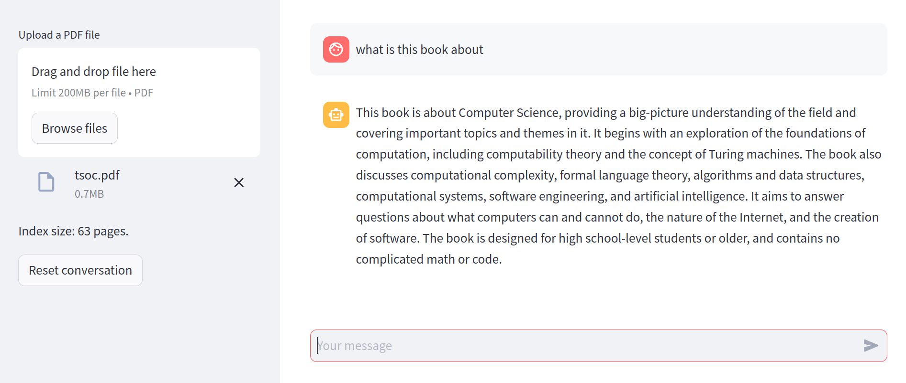

14 The PDF Reader
In this chapter we will build our first augmented chatbot. We will use the simplest form of augmentation, called RAG (retrieval augmented generation). In this case, we will inject extra information in the prompt that might be relevant for the user query. That information will be extracted from a user-provided PDF file. This will allow the chatbot to provide concrete answers to question about the content of the PDF file, presumably questions that couldn’t be answered otherwise.
Since we will be building on top of the basic chatbot architecture presented in Chapter 13, in this chapter we won’t go into much detail regarding the conversation workflow, storing the history, maintaining a conversation context, etc. I’m assuming you already know how to do all of that, so we will focus on the new stuff. Likewise, instead of slowly building and refactoring functionalities, we’ll be more direct and go straight to the final implementation.
The plan
The workflow of this demo will be the following:
- The user uploads a PDF file.
- The file gets indexed in a suitable format.
- The user makes a query.
- Given that query, an appropriate subset of the PDF document is extracted.
- The model is given the context and the user query to respond.
Here is a screenshot of the final result we want to achieve.

For this workflow to work, we need to solve two basic problems:
- how to index the PDF document such that we can retrieve the relevant fragments for a given query, and
- how to provide that context in an appropriate prompt for the model.
First, let’s tackle those problems at a conceptual level, and then we’ll see how to code the whole thing.
Indexing and retrieval
There are many ways to store a large document for retrieval. One of the most common is called a vector store (or vector database). In this approach, we split the document into meaningful chunks of text (say, each paragraph) and compute an embedding for each chunk. Then, the user query is also embedded and compared with each of the chunks’ vectors. The closest ones represent those fragments of text that are more closely related (semantically) with the query–if your embeddings are good, that is.
This is the simplest approach, and it works good enough for most applications. However, the embedding of the query might not be the most useful key to that index. This happens, for example, if the query is something very abstract like “what are the main topics in this document”. If the document happens to contain a chunk that mentions “the main topics”, that will work. But oftentimes, these types of general questions need a further processing to summarize and abstract the content of the document.
Although we will not deal with these issues in this chapter, the general workflow we will develop here can be easily adapted to more complex scenarios. We’ll say more about these extensions at the end of the chapter.
Giving context to the chatbot
Once we have identified the, say, top 3 chunks of text that most likely contain relevant information to answer a user query, we need to give that context to the chatbot.
Enter prompt engineering.
So far, we have provided the chatbot with the exact user query, but there is nothing that forces us to do that. On the contrary, we can augment that query with any additional information we have that might enhance the conversation. The simplest way to do so is to construct a prompt that contains the user query and extra instructions or information.
Here is one example:
The following is a relevant extract of a PDF document
from which I will ask you a question.
## Extract
... [chunks extracted from the vector store] ...
## Query
Given the previous extract, answer the following query:
... [user query] ...We then feed this message as the user prompt, interpolating the right context. From the user perspective, they only asked one simple question, but from the chatbot perspective, the question comes with a big chunk of text from where to extract the answer. That is the magic of prompt engineering.
Implementing the vector store
An efficient and scalable implementation of a vector store must be able to retrieve the closest \(k\) vectors to a given input as fast as possible. Professional implementations of this functionality require advanced data structures like kd-trees and many low-level tricks to scale to search in millions of vectors.
However, for illustrative purposes, we’ll build our own, extremely inneficient and vector store. This has the advantage you won’t need to install anything to try this code, and you can always later switch it for a production-ready solution.
Our vector store is a simple collection of paired texts and numpy vectors.
class VectorStore:
def __init__(self) -> None:
self._data = []
self._vectors = []
def __len__(self):
return len(self._data)
def add(self, texts):
self._data.extend(texts)
self._vectors.extend(self.embed(texts))
# ....To compute embeddings, we will resort to another method in the Mistral.ai API, but basically any embedding model will do.
class VectorStore:
# ...
def embed(self, texts):
try:
client = MistralClient(api_key=st.secrets.mistral_api_key)
response = client.embeddings("mistral-embed", texts)
return [np.asarray(d.embedding) for d in response.data]
except Exception as e:
if not "Too many tokens in batch" in str(e):
raise
left, right = texts[: len(texts) // 2], texts[len(texts) // 2 :]
return self.embed(left) + self.embed(right)
# ...If you notice something weird in the embed method, is because we are being a bit lazy. The embedding endpoint has a maximum token lenght, and will return an error if we send too large a batch.
We want to send the largest batch possible to save time, so to avoid computing precise token counts in the client, we simply try with all the texts, and if that fails, we split them into two subsets and try again, until we find the sweet spot.
This has the obvious downside of being slower, but for illustrative purposes, it is good enough.
For searching, we will simply compute the euclidean distance between an input vector and all the database.
class VectorStore:
# ...
def search(self, text, k=1):
# Get the document embedding
v = self.embed([text])[0]
# Find the closest K vectors
idx_min = sorted(
range(len(self._vectors)),
key=lambda i: np.linalg.norm(v - self._vectors[i]),
)[:k]
# Retrieve the corresponding texts
return [self._data[i] for i in idx_min]
# ...And that’s it. In little more than 30 lines of code we have a barebones vector store that we can use for small documents. Again, it doesn’t make sense to optimize this any further, as there are plenty of production-ready vector databases out there. Just google it.
Managing the prompt
The final piece of the puzzle is to build that augmented prompt which includes the relevant chunks for our indexed document. The actual prompt template I’m using in this demo is the following:
USER_PROMPT = """
The following is a relevant extract of a PDF document
from which I will ask you a question.
## Extract
{extract}
## Query
Given the previous extract, answer the following query:
{input}
"""The extract argument will interpolate the extracted chunks, and the input argument will contain the actual user query.
Now, the first idea that might come to your mind is simply submitting the prompt (with the interpolated content) to our chatbot. And while this works, it has an ungly downside.
You see, our Chatbot implementation (taken directly from Chapter 13) does all the conversation management automatically. This means that whatever we give it as a user message, will come back to us in the conversation history. Thus, if we send the full augmented prompt as the user message, our chat history will become polluted with all those injected chunks of text. Ugly!
To solve this, we’ll make the Chatbot instance aware of our prompt engineering. We’ll supply a user template at initialization.
class Chatbot:
def __init__(
self,
model: str,
system_prompt: str = DEFAULT_SYSTEM_PROMPT,
user_prompt=DEFAULT_USER_PROMPT,
) -> None:
self.model = model
self.client = MistralClient(api_key=st.secrets.mistral_api_key)
self.system_prompt = system_prompt
self.user_prompt = user_prompt
# ...In the submit method, we’ll include any optional arguments, which presumable contain whatever content the template expects.
class Chatbot:
# ...
def submit(self, content, role="user", context=0, **kwargs):
messages = self.history(context)
self.store(role, content)
messages.insert(0,
ChatMessage(role="system", content=self.system_prompt)
)
if role== "user":
content = self.user_prompt.format(input=content, **kwargs)
messages.append(ChatMessage(role=role, content=content))
if role == "user":
return self._stream(messages)
# ...This way, the Chatbot class itself will perform the interpolation, but store in the conversation history only the clean user input.
The final application
With all the pieces in place, it’s time to build the final puzzle. Since we have dutifuly encapsulated all the important functionality, our application will be a very straightforward Streamlit app.
We begin, as usual, with the preamble.
import streamlit as st
from utils import Chatbot, VectorStore
from pypdf import PdfReader
st.set_page_config(page_title="PDF Bot", page_icon="ü§ñ")Next, we set up the file upload widget. The app will stop at this point until the user submits a file.
fp = st.sidebar.file_uploader("Upload a PDF file", "pdf")
if not fp:
st.warning("Please upload your PDF")
st.stop()With a proper PDF file at hand, we can initialize our vector store. We are using the st.cache_data to ensure that as long as the file doesn’t change, we won’t recompute embeddings every single time.
@st.cache_data(show_spinner="Indexing PDF...")
def get_store(pdf):
store = VectorStore()
texts = [page.extract_text() for page in PdfReader(pdf).pages]
store.add(texts)
return store
store = get_store(fp)
st.sidebar.write(f"Index size: {len(store)} pages.")Next, we intialize our bot, and set up the restart conversation functionality, just like in the previous chapter. Notice that this is the moment we configure the user prompt template.
USER_PROMPT = """
The following is a relevant extract of a PDF document
from which I will ask you a question.
## Extract
{extract}
## Query
Given the previous extract, answer the following query:
{input}
"""
bot = Chatbot("open-mixtral-8x7b", user_prompt=USER_PROMPT)
if st.sidebar.button("Reset conversation"):
bot.reset()The usual drill comes next: recreate the conversation history, and get the user input.
for message in bot.history():
with st.chat_message(message.role):
st.write(message.content)
msg = st.chat_input()
if not msg:
st.stop()
with st.chat_message("user"):
st.write(msg)And finally, we extract the most relevant chunks and submit our augmented prompt.
extract = store.search(msg, 3)
with st.chat_message("assistant"):
st.write_stream(bot.submit(
msg,
context=2,
extract="\n\n".join(extract)
))And… we’re done! Our first retrieval-augmented application, in less than 100 lines of code total. Who said chatbots where hard?
Conclusions
In this chapter we built our first non-vanilla chatbot application. It may seem like a small step for you, but it is a giant leap for… well, you get the point.
The crucial lesson in this chapter is how, with proper context, we can turn a standard chatbot into a powerful question-answering machine with deep expertise in any specific domain. You can use this formula to build smart assistants for your company or organization. You turn this into a research helper by feeding it papers or books (although we will build a proper research assistant in ?sec-research). Or you can feed it with any book you’re currently reading and use it to extract insights and summaries.
One key limitation of this simplistic approach to RAG is that, since you’re embedding the user query to find relevant chunks, you might miss the answer to some question altogether if the relevant chunk doesn’t happen to have a similar enough embedding with the input. Many strategies can be used to mitigate this, and you’ll find a few suggestions summarized in ?sec-augmentation. Furthermore, you can combine this approach with any of the advanced prompting techniques in Chapter 6 for maximum coolness.
The basic architecture we designed in this chapter will be the basis of much of what’s to come. The complexity will be in finding the right context, and reformulating the user query in a convenient way.